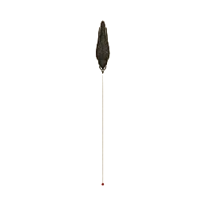
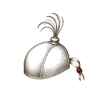

Intervenção comandada · 21 dias
Em 21 dias, a sua operação passa a rodar sobre uma estrutura que sustenta a decisão de compra sozinha e aguenta mais verba sem queimar margem, executada pela sua própria equipe. Depois, saio.
A entrada é por aplicação e começa por um exame. O exame pode terminar em «não é caso»: você fica com a medição e não paga mais nada.
Aplicação escrita. Dez minutos. Resposta em 24 horas. Sem call de vendas.
Quem já passou pelo instrumento
Dois números, com nome
Tinha base e nenhuma estrutura de decisão. Tese, oferta, campanha e caminho foram construídos do zero, e o primeiro lançamento semente fez esse número.
Lançamento desorganizado, promessa difusa, produto de R$400. Reposicionamento e estrutura. Um segundo ciclo, com produto de R$100, ficou perto de R$80 mil. Hoje o perfil passa de trezentos mil seguidores.
Déa e Tiba, do Família Forte, também foram lançados por mim. Hoje ela passa de um milhão de seguidores e ele de setecentos mil, e o resultado que tivemos juntos veio lá atrás, com a estrutura, não com a base. O número fica fora daqui porque ainda não pedi autorização para usá-lo.
Um limite declarado, porque ele vai aparecer na sua cabeça de qualquer jeito: ainda não existe caso do próprio Comando. O acervo começa agora, e cada intervenção entra numa lista curta de operações documentadas com número de entrada e número de saída, por cláusula de contrato. Seis anos de bastidor vieram antes do método.
Para quem esta página foi escrita
Especialistas no nível que você ocupa não deixam a estrutura de decisão no improviso
Nem por descuido. Por sequência: a estrutura de decisão é a única camada da operação que nunca teve dono. O tráfego tem gestor, a página tem quem sobe, o comercial tem quem atende, e a pergunta de por que a pessoa decide continua sendo respondida por tentativa.
Se você comanda uma operação que vende decisão de ticket alto pela internet, fatura acima de R$100 mil por mês, roda tráfego pago hoje e reconhece estes sinais:
- Sobe a verba e o custo por venda sobe junto
- O que funcionava com o público quente quebra quando chega o público frio
- Criativo que segurava meses hoje segura semanas
- Cada fornecedor aponta para o outro, e você fica no meio pagando todos
- A equipe executa, e nenhuma decisão de estrutura tem critério escrito
O que acontece se isso não for corrigido tem conta, e você já viu a sua na leitura. Mas a conta é a parte fácil de aceitar. A parte difícil é que cada semana com a estrutura em erosão é uma semana em que gente que procurou você, e que o seu trabalho resolveria, não chegou até o fim do percurso. Isso não aparece em relatório nenhum.

O que é o Comando
Você executa. Eu comando.
Por 21 dias, quem executa é a sua operação; quem responde pela estrutura sou eu. Você executa com a sua equipe, e eu comando cada decisão estrutural até a máquina estar de pé. Depois, saio, e o critério fica na casa.
A camada que está cedendo tem nome clínico: Falha de Sustentação de Decisão. A oferta não sustenta mais a decisão sem ajuda de desconto, de insistência ou de verba. Três invariantes fazem a correção funcionar onde o resto falha.
- Entra-se sempre pelo laudo, nunca pelo pedido
Se a medição mostra oferta erodida, recompõe-se. Se mostra que a peça inteira falta, constrói-se. O laudo decide, não a sua preferência nem a minha. - Escopo por recusa
O laudo declara, por escrito, o que fica intocado neste ciclo. Quem mexe em tudo nunca sabe o que moveu. O que sustenta o trabalho não é a lista do que eu toco, é dizer o que não toco e por quê. - O critério fica na casa
Cada decisão estrutural sai documentada com a lógica, consultável pela sua equipe durante os 21 dias e depois. A dependência do arquiteto termina no dia 21 por desenho.
O calendário
Reunião de Arquitetura, 120 minutos, gravada. Laudo lido com você e com os executores, ordem de reconstrução, o que fica intocado, critério de pronto por artefato e o calendário datado das tarefas da equipe.
Análise de concorrência promessa por promessa, mensagem recomposta, oferta canônica e arquitetura de preço e risco, escritos e defendidos. A sua equipe prepara as superfícies.
Inventário de prova e peças do caminho escritos. A equipe implanta as peças da semana 1 sob comando.
A equipe implanta as peças do caminho, o fluxo é testado de ponta a ponta e o Agente do Projeto é entregue.
Reunião de Encerramento, 90 minutos, gravada. Critério de pronto conferido artefato a artefato, medição de saída no mesmo instrumento da entrada, re-medição do dia 30 agendada. Saio.
Grupo dedicado com você e os executores, resposta a toda decisão estrutural no mesmo dia útil, e duas sessões de decisão por semana de 60 minutos, gravadas. Nenhuma peça sobe sem comando.
O que fica com você
Nove artefatos: Exame Estrutural, Veredito do Gargalo Dominante, Análise de Concorrência, Mensagem Recomposta, Oferta Canônica, Arquitetura de Preço e Risco, Inventário de Prova, Peças do Caminho escritas e Agente do Projeto. Mais três inclusos: janela de ajuste de 30 dias com re-medição, Briefing de Defesa Interna e Protocolo de Sinais de Erosão. Todas as reuniões gravadas.
O que não entra
Subir página, configurar ferramenta, tráfego, criativo, operar CRM, vender pelo seu time, garantir faturamento. A sua operação executa; eu comando. É por isso que a aplicação pergunta quem executa página, tráfego e CRM: operação sem braço contrata antes do dia 0 ou não entra.
A garantia
O raio-x grátis termina em pitch. Este exame pode terminar em «não é caso».
- No exame
O laudo entrega gargalo nomeado, vazamento medido em reais e ordem de conserto. Se não entregar os três, o exame não é cobrado. É o único cenário de devolução, e depende só de mim. - Na passagem
O Comando só é oferecido se o exame indicar. O exame termina em um de três vereditos, e um deles é «não é caso estrutural agora», com o laudo apontando onde o problema está e a conversa encerrando ali. Você nunca paga por promessa: paga pela medição, que fica com você nos três cenários. - Nos 21 dias
Se a estrutura não estiver de pé por falha do comando, a janela se estende sem custo até estar. «Estrutura de pé» é definição, não interpretação: os artefatos entregues contra o critério de pronto assinado no dia 0, conferidos artefato a artefato na reunião de encerramento, com a medição de saída assinada pelos dois.
A garantia cobre a entrega, nunca o faturamento. Nenhuma parte deste trabalho promete um número de receita, e qualquer pessoa que prometa isso para você está vendendo outra coisa.
Critério de entrada
Para quem é, e para quem não é
Operação que vende decisão de ticket alto pela internet, com oferta própria validada, tráfego pago rodando hoje, faturamento acima de R$100 mil por mês e uma equipe que executa. A decisão de estrutura ainda mora com você.
Iniciante construindo o primeiro produto. Afiliado sem oferta própria. Operação pré-receita ou sem tráfego ativo. Faturamento abaixo de R$50 mil por mês. Operações de alegação agressiva. E, nesta fase, estruturas em que a decisão já não está com o dono.
Quem quer que alguém execute tudo por ele. Esse é cliente de outro serviço, não deste. Aqui a sua equipe implanta, sob comando.
Sobre a fila
Três operações em comando ao mesmo tempo, no máximo. A quarta espera a primeira chegar ao dia 21, e a fila anda na ordem da aplicação. Não há contagem regressiva nem data de encerramento: o relógio é de capacidade, e é o único relógio meu nesta página.
Quem assina

Seis anos antes do método: construindo, lançando e diagnosticando operações digitais de lançamento, perpétuo e ticket alto. A prática veio antes do método. Meço onde a estrutura cede e recomponho o que sustenta a decisão.
Aplicação
Dez minutos, por escrito
Eu leio pessoalmente e respondo em 24 horas. A resposta é uma mensagem, não uma reunião, e ela diz uma de duas coisas: o Exame está aberto para você, ou o degrau que cabe agora é outro e qual é.
Aplicação recebida.
Eu leio pessoalmente e respondo em até 24 horas, no WhatsApp que você deixou. A resposta é uma mensagem, não uma reunião.
Enquanto isso, nada precisa acontecer do seu lado. Não pause campanha, não troque nada, não antecipe correção: a medição vale mais com a operação exatamente como está hoje.